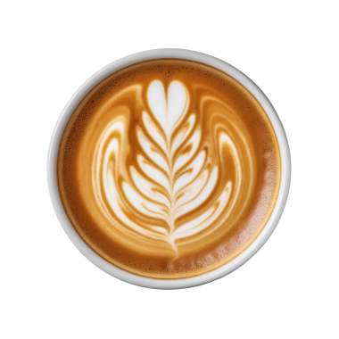
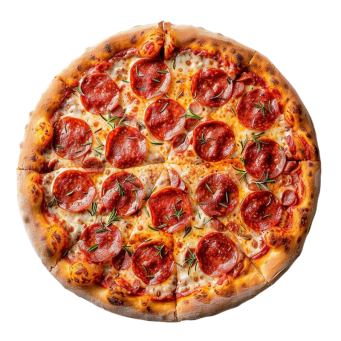
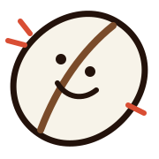

₺160
Çok Satan
Smashed Caramel Latte
Double espresso, kadifemsi süt, ev yapımı karamel ve bir tutam deniz tuzu.
Erenköy'ün Buluşma Noktası




NİTELİKLİ KAHVE ★ TAZE HAMUR İŞLERİ ★ COLD BREW ★ ERENKÖY ★
The Mandarin'a Hoş Geldiniz
Erenköy'de her fincan, özenle seçilmiş ve karakterini ortaya çıkarmak için taze kavrulmuş çekirdeklerle başlar. Baristalarımız latte sanatını ustalık, titizlik ve yaratıcılıkla buluşturur. The Mandarin, kısa bir mola için uğrayıp sıcak atmosferi için kalacağınız canlı bir mahalle kahvecisidir.

Sevgiyle kavruldu
Fikrinizi önemsiyoruz
The Mandarin deneyiminizi paylaşın. Yorumunuz, bizi geliştirmemize ve yeni misafirlerin bizi keşfetmesine yardımcı olur.
Kahvenizi, tabağınızı ve atmosferimizi nasıl buldunuz?
Kahve, ustalık ve mahalle ruhu